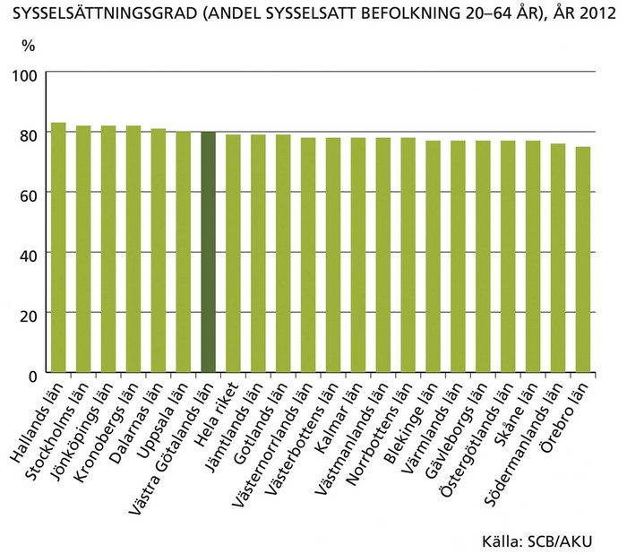
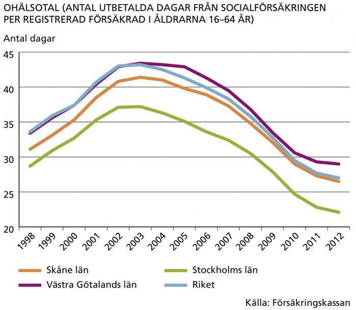
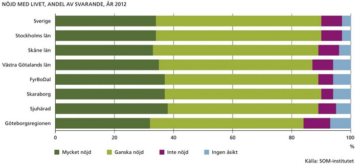

Trygghet, gemenskap och delaktighet i det sociala livet är grundläggande förutsättningar för människans välbefinnande. Enligt den senaste folkhälsoenkäten 2011 uppgav åtta av tio av de invånare i Västra Götaland som svarat, att de var delaktiga i samhällslivet. Lägst delaktighet har män med kort utbildning och hög ålder medan yngre kvinnor med lång utbildning har högre delaktighet.

Att delta i arbetslivet är viktigt för att skapa sociala kontaktnät, gemenskap och relationer. Under det första kvartalet år 2013 var 778 900 personer sysselsatta i arbetslivet. Antalet minskade med 1 300 personer jämfört med första kvartalet året innan.
Sysselsättningsgraden (Sysselsatta som andel av befolkningen 20–64 år) i Västra Götaland låg på 80 procent år 2012 men varierade kraftigt mellan olika befolkningsgrupper.
Den totala sysselsättningsgraden i Sverige (20–64 år) är 79 procent för män och 75 procent för kvinnor. Bland personer födda i Sverige är sysselsättningsgraden 82 procent1. För personer som är födda utanför Sverige i Norden är siffran 65 procent. Sysselsättningsgraden varierar beroende på födelseregion.
1 Observera att det finns två olika källor till sysselsättningsgrad. Eftersom RAMS och AKU använder olika metoder för insamling av data finns det även skillnader i redovisningen.
Jämställdhet mellan kvinnor och män är en viktig välfärdsfråga. Ett område där det fortfarande finns stora skillnader mellan män och kvinnor är arbetsmarknaden – både när det gäller sysselsättningsgrad, löner och yrkesval. Bland de tio mest vanliga yrkena finns någorlunda jämn könsfördelning endast bland försäljare inom fackhandel. Sysselsättningsgraden för kvinnor ligger fortfarande lägre än för män, men har ökat mycket de senaste decennierna. Även i ett europeiskt perspektiv ligger kvinnornas sysselsättningsgrad i Västsverige högt, med 75 procent. Den genomsnittliga sysselsättningsgraden för kvinnor i Europa är 63 procent.
Det finns stora geografiska skillnader på arbetsmarknaden inom Västra Götaland. Skillnaderna ökade ännu mer under lågkonjunkturen då arbetslösheten slog särskilt hårt mot Fyrbodal och Skaraborg. Nedläggningen av Saab i Trollhättan 2012 har påverkat arbetsmarknadssituationen i Trollhättan med omnejd kraftigt. I Trollhättan var 15 procent av den registrerade arbetskraften (16–64 år) eller 4 300 personer öppet arbetslösa eller arbetssökande i program i maj 2013. eller 4 300 personer öppet arbetslösa eller arbetssökande i program i maj 2013. Högst var siffran i januari 2012 då 5 600 personer var öppet arbetslösa eller i program.
I maj 2013 var arbetslösheten 7,8 procent av den registrerade arbetskraften (16–64 år). Totalt handlade det om 31 000 öppet arbetslösa och ytterligare 31 000 personer i program i maj 2013.
Ungdomsarbetslösheten är hög. 13 400 personer i åldrarna 18–24 år var arbetslösa (motsvarande 14,4 procent av den registrerade arbetskraften 18–24 år) i maj 2013.
Det finns även stora skillnader på arbetsmarknaden mellan svenskfödda och utrikesfödda personer. Skillnader i sysselsättningsgraden och yrkesval gör att även inkomstspridningen blir ojämn mellan dessa grupper. Skillnaderna är extra tydliga mellan olika stadsdelar i Göteborg där stadsdelar med hög andel utrikesfödda även har en relativt sett stor andel med låga årsinkomster.
Segregationen mellan olika befolkningsgrupper är även tydlig på bostadsmarknaden. Bland personer som inte är födda i EU-/EFTA-länder är det dubbelt så vanligt att bo i hyreshus än jämfört med den svenskfödda befolkningen. Skillnaderna är dessutom något högre i Västra Götaland än i de övriga storstadslänen.
År 2011 fanns det 74 000 personer i Västra Götaland, motsvarande fem procent av befolkningen, som någon gång under året fick ekonomiskt bistånd. Det är samma antal som två år tidigare men lägre än året innan. Antalet biståndstagare i Västra Götaland minskade med sex procent mellan år 2010 och 2011, vilket är något större minskning än genomsnittet i riket. Störst andel biståndstagare finns i Göteborgs och Trollhättans kommun.
Ohälsan i arbetslivet i form av sjukskrivningar ökade kraftigt under slutet av 1990-talet och början av 2000-talet. Även om det har skett en viss nedgång i ohälsotalet sedan 2003 är det många som är frånvarande från sina jobb på grund av sjukdom. Västra Götaland ligger något högre än genomsnittet i riket. Kvinnors ohälsotal (36) ligger betydligt högre än männens (25). Det finns dessutom stora skillnader inom Västra Götaland.

Trygghet är en viktig förutsättning för att trivas och må bra. Antalet anmälda brott per invånare ligger lägre i Västra Götaland än i riket och de två övriga storstadslänen. Det totala antalet anmälda brott per invånare har ökat under andra halvan av 2000-talet.
Den kanske mest grundläggande möjligheten att delta och påverka samhällsutvecklingen är att utnyttja sin rösträtt. Trenden från mitten av 1980-talet till och med 2002 var ett minskat valdeltagande i kommunal-, landstings- och riksdagsval. I de allmänna valen 2006 och 2010 har dock valdeltagandet åter börjat öka. Valdeltagandet varierar kraftigt mellan olika socioekonomiska grupper.
Även om det finns stora inomregionala skillnader när det gäller arbetslöshet, ohälsa i arbetslivet samt ekonomisk trygghet visar SOM-undersökningen2 att en stor del av befolkningen i Västra Götaland känner sig mycket eller ganska nöjda med sina liv oavsett var de bor.
2 SOM-undersökningen görs av SOM-institutet som är en opartisk undersökningsorganisation vid Göteborgs universitet. Fokus i undersökningarna är på Samhälle, Opinion och Media

This is just a landing page.
Back